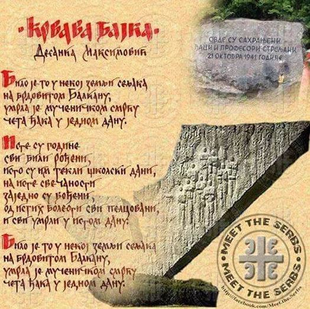

| Почетна | Рођење и младост | Њена литература | Одликовања и признања | Последње године и смрт |
Чувши за стрељање ученика у Крагујевцу 21. октобра 1941. песникиња је написала једну од својих најпознатијих песама „Крвава бајка” – песму која сведочи о терору окупатора над недужним народом током Другог светског рата. Песма је објављена тек после рата. Пропутовала је тадашњу Југославију и имала велики број пријатеља међу писцима и песницима; међу њима су били Милош Црњански, Иво Андрић, Густав Крклец, Исидора Секулић, Бранко Ћопић и многи други. 17. децембра 1959. године изабрана је за дописног члана Српске академије наука и уметности, а 16. децембра 1965. за редовног члана.
Најчешћи мотив у поезији Десанке Максимовић била је љубав, а њена реч, однос према свету и филозофија били су и сами поетске природе. Њену поезију карактерише обиље нове алитерације и риме. Њен основни поетски мото био је да поезија буде разумљива, јасна, искрена, отворен за човека и живот. Многе њене песме позивају људе да буду добри, племенити, поносни, непоколебљиви, да поштују људе различитих уверења и принципа, мишљења, боја и вероисповести, и да буду строги према својим, али и према грешкама других. Од свих животних вредности, у својим песмама је посебно истакла слободу, оданост, храброст, доброту и несебичност.
У каснијем периоду живота лирика Десанке Максимовић попримила је нешто мирнији и тиши дух. Њена поезија, приповетке, романи, књиге за децу преведене су на многе језике, а њене појединачне песме уврштене су у антологије поезије.
Дана 17. децембра 1959. изабрана је за дописног члана Српске академије наука и уметности, а 16. децембра 1965. за редовног члана.
